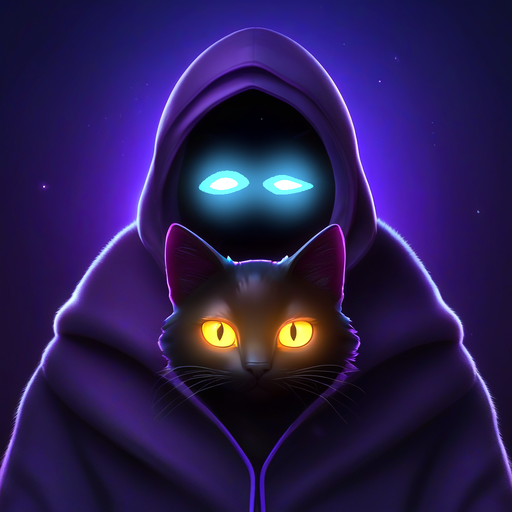
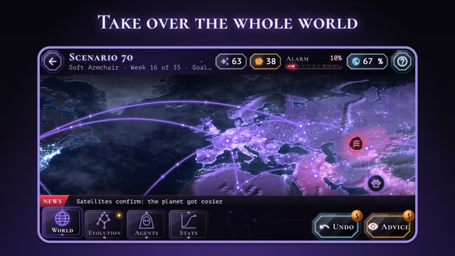

Cult: Global Domination
A hidden order takes over the night Earth: a strategy simulator and clicker.
One damp basement, a flickering bulb and a cat. World domination starts here. Cult: Global Domination is a strategy simulator and clicker about a very silly hidden society: an order of socks, fluffy paws and the eternal Monday quietly spreads over the night Earth.
Tap the map to gather Influence, catch your order's signs and swipe away the traces before the World Bureau of Investigation notices them. Buy dogmas, transmission and resilience, send your agents out and keep the Alarm below 100 %. Otherwise the Grand Master ends up on the evening news. In pajamas.

- A living spread model: 12 regions of the night Earth, links over land and across the ocean; your order's neon stain floods the map while city lights turn violet one by one.
- 300 scenarios in 10 campaigns, from one basement to the whole planet (and the penguins), with twists such as No internet, Witch hunt and Blitz, and a crisis every ten scenarios.
- A tree of three branches with 10 nodes each, real estate from a basement to a skyscraper, and six agents: Agent Murka, the Accountant, the Penguin Correspondent and more.
- Urgent dossiers: over 200 absurd events with choices, a news ticker and charts of growth and Alarm.
- The Keeper of Protocols advises the next purchase, and the last purchase can be taken back.
- The order's HQ with rooms and income in Seals, a collection of doctrines, relics and achievements, your order's symbol and colour.
- A daily conspiracy, daily tasks and a weekly goal, holiday events; plays offline, in English and Russian.
Everything is made up and funny: no real religions, countries, organisations or people. The world will not take itself over.